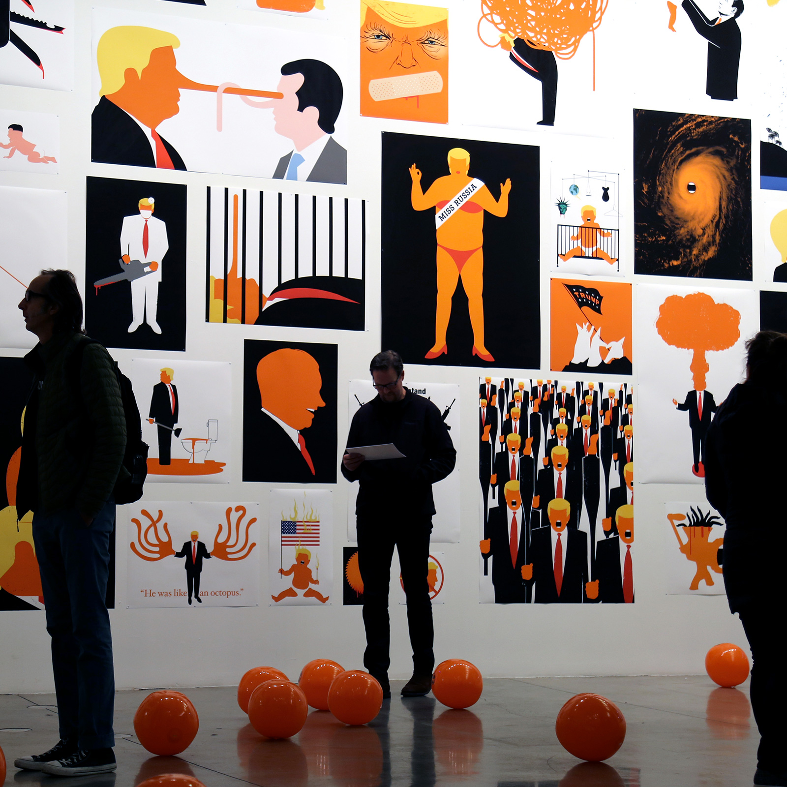

Sobre
Edel Rodriguez (nascido a 22 de Agosto de 1971 em Havana, Cuba) é um artista cubano-americano, ilustrador, e autor de livros infantis. Utilizando uma variedade de materiais, a sua obra vai desde o conceptual ao retrato e à paisagem. Propaganda socialista e publicidade ocidental, cultura insular, e vida urbana contemporânea, são todos os aspectos da sua vida que informam o seu trabalho.
Até aos 9 anos de idade, Rodríguez viveu na cidade rural cubana de El Gabriel. Numa entrevista conduzida por Yuko Shimizu, Rodriguez descreveu as suas primeiras influências visuais como imagens militares, revolucionárias e nacionalistas. Em 1980, Rodriguez emigrou para os Estados Unidos com o seu pai, Cesareo Rodriguez, a sua mãe, Coralia Rodriguez, e a sua irmã Irma, como parte dos milhares de cubanos que chegam no elevador de barco Mariel. A sua família chegou a Key West e como o governo cubano tinha tomado posse das famílias em casa, carro, mobília e roupa, a família Rodriguez tinha pouco com que começar uma nova vida. A família mudou-se com familiares em Miami, Florida, onde o pai da Edel estabeleceu um negócio de camionagem. Dois anos depois de chegar aos EUA, Rodriguez tinha dominado a língua ao ponto de se tornar um campeão da Spelling Bee. Rodriguez formou-se na Hialeah-Miami Lakes High School em 1990.
Após a graduação do liceu, Rodriguez frequentou o Pratt Institute em Brooklyn, Nova Iorque. Enquanto aluno do Pratt, Rodriguez estagiou na revista Spy, MTV e Penguin Books. Após graduar-se na Pratt com distinção e ganhar um BFA com uma bolsa de estudo integral em pintura, Rodriguez continuou a ganhar um M.F.A. pelo Hunter College em 1998.
Em 1994, Rodriguez começou a trabalhar como director de arte para a revista Time. Aos 26 anos, Rodriguez foi o mais jovem director de arte a trabalhar nas edições canadianas e latino-americanas da revista Time, cargo que ocupou até 2008, quando começou a dedicar todo o seu tempo à arte e à ilustração comercial. Enquanto trabalhava na Time, Rodriguez produziu uma quantidade significativa de trabalho de ilustração, a maior parte do qual foi feito à noite. Alguns dos trabalhos comerciais mais memoráveis produzidos durante este período foram a sua capa de 27 de Junho de 2005 da revista Time para a Nova Revolução da China, na qual Mao Tse Tung é representado vestindo Louis Vuitton, e a sua capa de Maio/Junho de 2006 da revista Communication Arts retratando Che Guevara vestindo um logótipo da Nike e auscultadores da Apple. A capa da Time retratando Mao Tse Tung foi mais tarde utilizada em 2009 como capa para os 200 Melhores Ilustradores do Mundo da Lürzer. Ao longo da sua carreira, Rodriguez utilizou uma variedade de meios artísticos incluindo pintura, gravura, pastel, desenho de linhas, bem como manipulação digital. O trabalho de Rodriguez tem sido publicado por revistas como The New Yorker, Time, Rolling Stone, Fortune e outras. A obra de Rodriguez também tem sido utilizada por clientes empresariais como a MTV, Pepsi Inc e outros. A obra de Rodriguez também aparece regularmente na página Op-Ed do The New York Times.

Trabalhos de Edel Rodriguez
Caraterísticas
- Planos
- Temas políticos
- Pouca definição
- Cores fortes
Locais para onde já trabalhou
O mais conhecido de Edel Rodriguez: